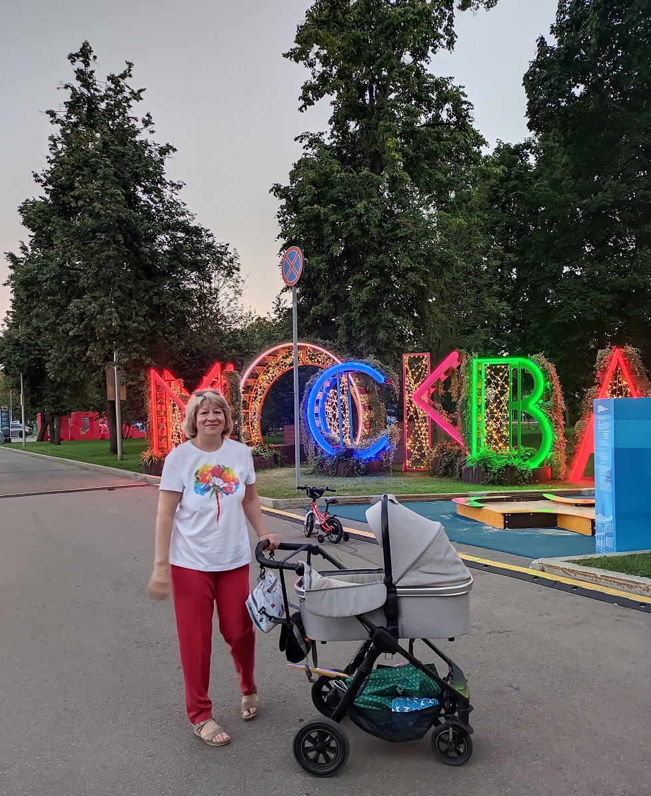

Как мне нравится быть бабушкой!

Можно долго вместе с внуком наблюдать за работой мусоровоза или любоваться, как классно работает эксковатор и при этом быть окруженным аурой теплоты и нежности. Ни куда не торопиться. Мы вышли гулять и узнавать окружающий мир, и пусть весь мир подождет. Неторопясь мы рассматриваем листочки у всех встречающихся нам деревьев, пытаемся воспроизвести их названия. Наверное и это "сосна" или "дуб"... Смешно и мило, а ещё радостно от .
Дед, поехали к внукам
Собираемся основательно и едем. Теперь у нас внук и маленькая внучка. Завтра все вмести поедем в Коммунарку фото +фото бирки+ видосики+
совпадение, как предчуствие... давай побудем и отметим внуку пять лет, тогда и уедем... До обидного мало, но Бабушке Вали всетаки удалось побыть бабушкой.
Задумчиво не погуляешь, почему-то именно когда на прогулке с ними сразу двоими у них желание пойти в разные стороны и не догнать.
в переди у нас много восхитителных открытий